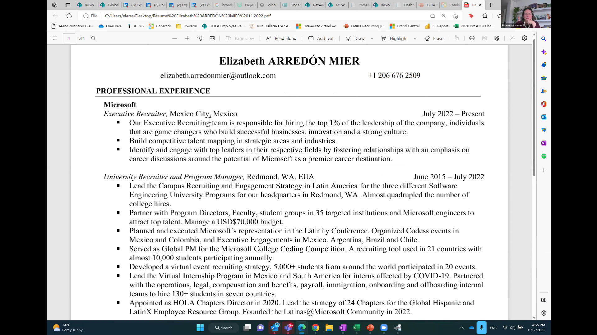
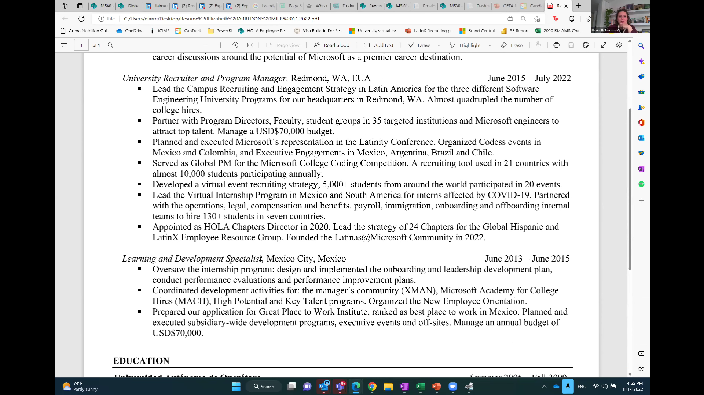
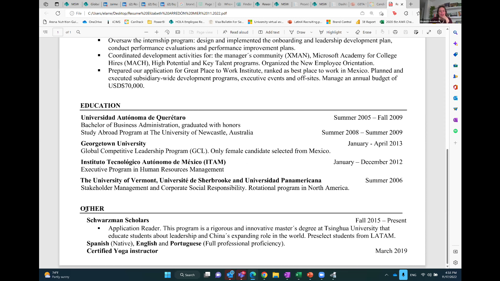
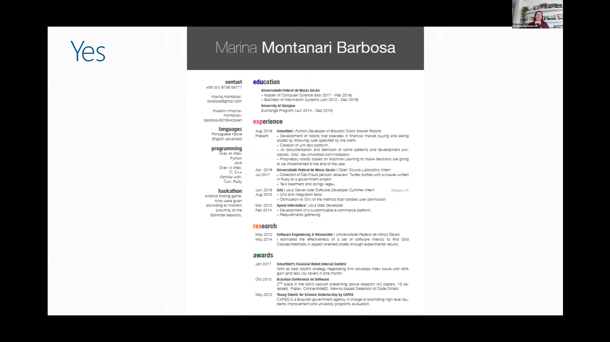
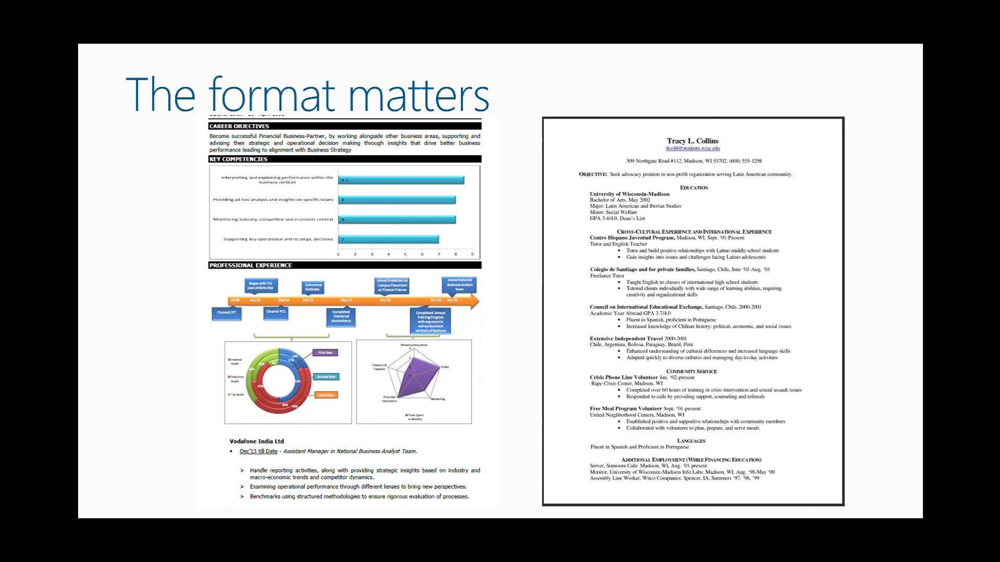
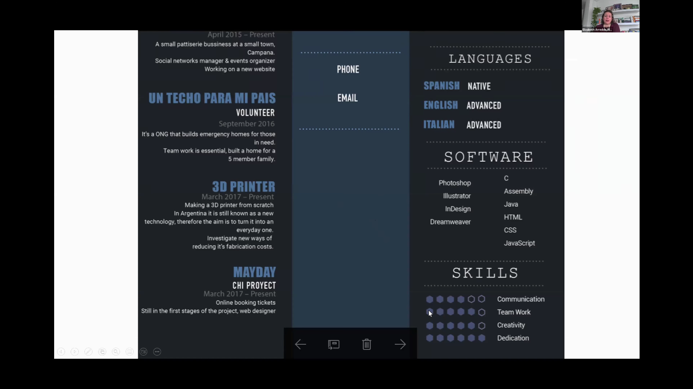

Un curriculum es un documento que enlista nuestra información personal, educación, experiencia profesional y habilidades
para diferentes propositos, ya sea para obtener un trabajo, solicitar una beca,realizar una presentación frente a un panel, etcetera.
¿Mi CV fue efectivo?
Si obtuviste la primera ronda de entrevistas, quiere decir que tu CV cumplió con su objetivo. A menudo se acostumbra mantener un
CV universal que luego será modificado en función del programa o puesto que se este solicitando.
¿Qué hacer si aún no tengo experiencia laboral?
Proyectos escolares
Es un excelente comienzo, conforme avanzamos en la carrera estos incrementan su dificultad y complejidad, lo que
puede reflejar efectivamente habilidades, talentos y destrezas que fueron desarrolladas.
Proyectos personales
Actividades extraacademicas en donde se demuestren tus habilidades y contribuciones a la organización o público objetivo.
Estancias de investigación o profesional
Actividades relacionadas a la industría y proyectos desarrollados junto con un profesor tutor.
Servicio Social
Descripción sobre nuestra participación con alguna organización o institución que refleje nuestros valores y aprendizajes.
Actividades de voluntariado
Se estima que una gran parte de los gerentes contratantes valoran la experiencia desarrollada en actividades
de voluntariado como si fuera experiencia profesional.
Competencias
Olimpiadas de conocimiento, talleres, diplomados y cursos en donde se ha participado.
Competencias
Cada uno de los puntos mencionados anteriormente deben poseer, nombre, rol, fecha y el impacto que nuestra participación generó, es decir,
el formato es similar al de las actividades laborales descritas a continuación.
Si tengo experiencia laboral entonces describir:
Compañia: Industria (si la empresa no es muy conocida es necesario añadir una pequeña descripción de la compañia)
Rol (todos deben indicar su rol, independientemente si eres un pasante)
Fecha: Mes y año (La información en el CV debe organizarce de presente a pasado, si actualmente siguen trabajando es
importante colocar "presente")
Definir el impacto de nuestro trabajo.
¿Qué hacer?
Una página por cada 10 años de experiencia.
Si se aplica a una empresa internacional el CV debe ser escrito en inglés.
Entregar el CV en formato PDF.
Letra negra y fuente clara.
Mantener buen contraste utilizando colores negros, azul oscuro, gris oscuro, dado que muchas personas verán el CV y existe la
posibilidad de que tengan discapacidad visual. Es posible añadir otros colores, siempre y cuando cuidemos el contraste.
Cuidar la ortografía. (es buena idea compartir nuestro CV con amigos o familia antes de compartirlo para que identifiquen errores que
puede que pasemos por alto)
Específicos y proveer detalles.
Es buena idea crear un CV universal y después adaptarlo para el rol que apliquemos.
La fecha de graduación es relevante para que el reclutador pueda determinar la eligibilidad para un programa de Intenship o para
un trabajo de tiempo completo.
El promedio también se puede incluir, aunque debemos considerar que si este es moderadamente bajo es preferible no incluirlo.
¿Qué no hacer?
Evitar encabezados como "Curriculum Vitae" u "Hoja de vida", con el fin de ahorrar espacio recordemos que cada palabra cuenta.
Fotografía e información personal puede prestarse a discriminación. Es preferible evitar colocar esta información para que seamos
evaluados en base a nuestra educación, experiencia profesional y habilidades. Podemos colocar número telefónico, correo electrónico,
perfil de LinkedIn, portafolio (en caso de ser artistas), Link a GitHub (para desarrolladores de software).
Correos electrónicos inapropiados.
Hobbies no relacionados al rol. Mantener aquellas actividades que puedan describir habilidades como líderazgo, disciplina, resiliencia
por ejemplo, no es lo mismo decir "me gusta correr con mi perro" a decir, "soy maratonista / pertenezco al club representativo/
nadador profesional".
Incluir aspectos muy antiguos dado que estos van perdiendo relevancia después de los 5 años.
Profundizar demasiado en las actividades blandas, puesto que estas serán validadas en la entrevista.
Utilizar tablas para seccionar contenido.
Utilizar gráficas.
Utilizar pronombres personales.
Colocar detalles no fundamentales como salario en lugar de describir cual fue tu participación en tu trabajo.
Notas importantes
Puedes colocar idiomas aunque no se tenga una certificación y describirla como básica, intermedia, full professional proficiency.
Solamente debes ser conciente que se te puede cuestionar al respecto. Por lo que es importante conocer a detalle cada aspecto
que colocaste en tu curriculum.
La formula del éxito se refiere a como organizaremos la información en nuestra experiencia laboral y proyectos. Esta debe
describirsede la siguiente forma: Qué fue lo que hice, Cómo lo hice, Cuál fue el resultado o impacto.
Letra tamaño 11 o 12 es lo mejor.
Es preferible medir el nivel de dominio de cierta habilidad en base al tiempo de experiencia. Ejemplo: Manejo de lenguaje C - 2 años de experiencia.
"Los reclutadores no estamos buscando que se vea bonito, buscamos contenido."

Estructura de un CV correcto parte 1.

Estructura de un CV correcto parte 2.

Estructura de un CV correcto parte 3.

Estructura de un CV correcto.

CV incorrecto a la izquierda. CV correcto a la derecha

Estructura de un CV incorrecto.